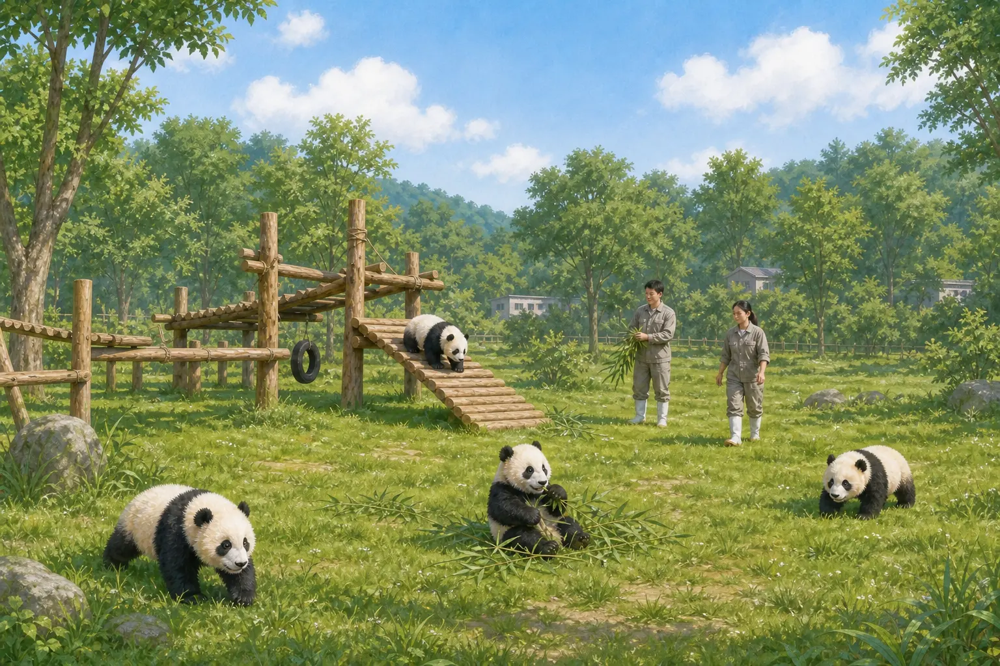
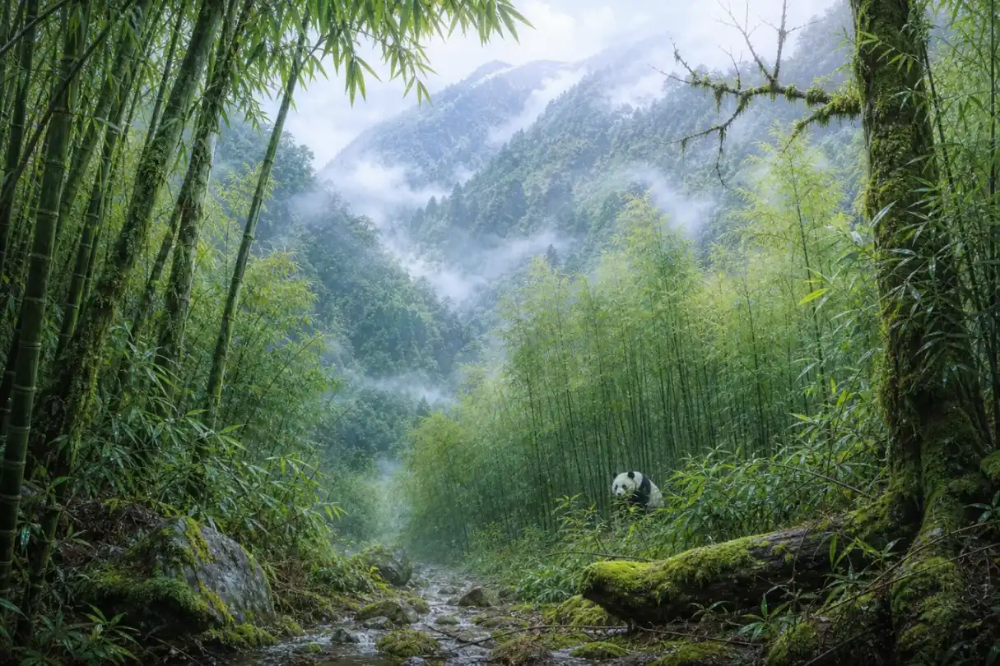
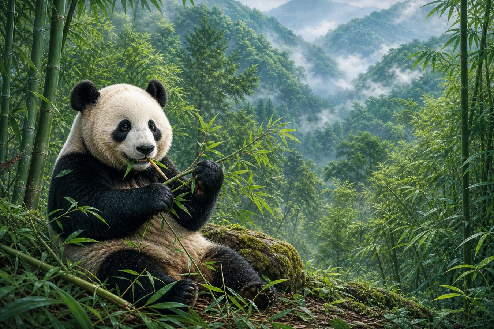
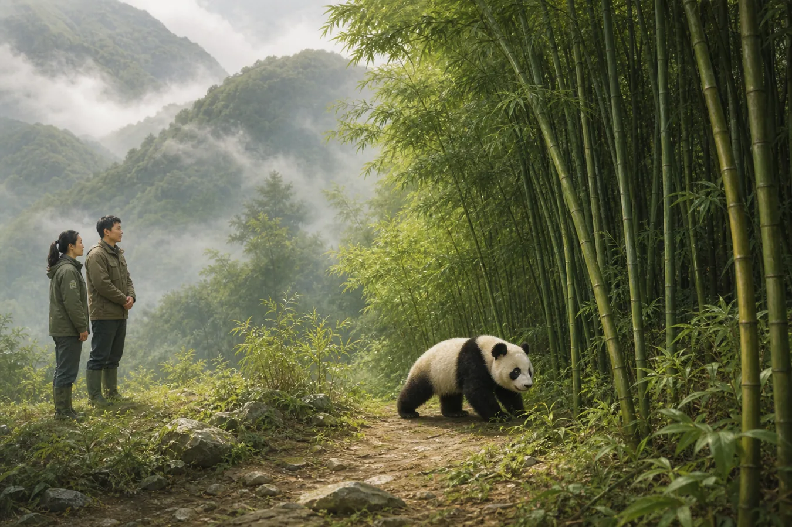

大熊猫的家乡
The Giant Panda's Homeland
Page 1
繁育基地里的熊猫幼儿园
A Panda Nursery at the Breeding Center

Giant panda cubs receive care at a breeding center.
刚出生的大熊猫一点儿也不像我们熟悉的样子。它只有一小块黄油那么重，粉红粉红的，眼睛还睁不开。它躺在妈妈身边，小得让人吃惊。
在Chéngdū · 四川省省会，也是重要的大熊猫保护和研究中心。的大熊猫繁育基地，工作人员会照顾熊猫妈妈和幼崽。他们检查宝宝的身体，准备食物，也研究怎样帮助大熊猫健康长大。等幼崽长出黑耳朵和黑眼圈，它才慢慢变成我们认识的“熊猫宝宝”。
不过，繁育基地更像一所特别的熊猫幼儿园。大熊猫真正的家，不在玻璃窗后面，也不在游乐木架上。要找到它的家，我们得离开城市，走进云雾中的高山森林。
A newborn giant panda looks nothing like the panda in a picture book. It weighs about as much as a stick of butter. It is pink, nearly hairless, and unable to open its eyes. Beside its mother, it looks unbelievably small.
At the panda breeding center in Chéngdū · 成都 · The capital of Sichuan and an important center for giant-panda conservation and research., people care for mothers and cubs. They check the babies, prepare food, and study how to help pandas grow. When a cub's black ears and dark eye patches appear, it slowly begins to look like the panda everyone knows.
But a breeding center is a little like a special panda nursery. A giant panda's real home is not behind a viewing window or on a wooden climbing frame. To find it, we must leave the city and climb into the misty mountain forests.
Page 2
云雾里的竹林
Bamboo Forests in the Mist

Wild giant pandas live in cool, damp mountain forests in central China, where bamboo grows beneath the trees.
野生大熊猫住在中国中部凉爽湿润的高山森林里。大多数生活在一个叫Sìchuān · 中国西南省份，拥有大面积的大熊猫山林栖息地。的地方，附近的山林里也住着一些。高大的树木撑起屋顶，下面长着大熊猫最需要的食物——竹子。
四川有高山，也有大片竹林，生活着最多的野生大熊猫，因此常被称为“大熊猫的故乡”。但地图上的熊猫家园并不是一整片森林。有些竹林隔着山谷，有些被公路、农田或城镇分开。
这对熊猫来说就像家里的房间忽然都失去了门。一间房里也许有食物，可是它去不了另一间，也很难遇到别的熊猫。保护熊猫，不只是保护一只动物，还要替这些“房间”重新接上安全的走廊。
Wild giant pandas live in cool, damp mountain forests in central China. Most live in a part of China called Sìchuān · 四川 · A southwestern Chinese province containing extensive mountain habitat for giant pandas., with smaller groups in nearby mountains. Tall trees form a roof, while bamboo—the panda's most important food—grows below.
Sichuan has high mountains, thick bamboo forests, and more wild pandas than anywhere else. That is why people often call it “the home of the giant panda.” Yet the panda's home is not one huge, unbroken forest. Some bamboo forests lie across deep valleys. Others have been separated by roads, farms, or towns.
For a panda, that can be like living in a house where the rooms have lost their doors. One room may have food, but the panda cannot reach the next one or meet other pandas. Protecting pandas means caring for the animals and building safe forest paths between their mountain homes.
Page 3
为什么一天吃这么久？
Why Does a Panda Spend So Long Eating?

A giant panda grips bamboo with its front paws and crushes it with powerful teeth and jaws.
大熊猫常常一屁股坐下来，两只前爪抱住竹子，咔嚓、咔嚓地吃个不停。它的前爪上还有一块特别的腕骨，像多出来的小拇指，可以帮它抓稳竹秆。
竹子很多，可是它能给熊猫的能量并不多。熊猫的肚子也不像牛的肚子那样善于消化植物。所以一只成年熊猫每天可能花十到十六个小时找竹子、吃竹子，还要吃下几十磅。嫩笋、叶子和竹秆，它会随着季节挑选。
吃完一根，再拿一根。大熊猫要花这么长时间吃东西，才能从竹子里得到足够的能量。
A giant panda often plops down, holds a bamboo stalk in both front paws, and begins to crunch. A special wrist bone works like an extra little thumb, helping the panda keep a firm grip on its lunch.
Bamboo is plentiful, but it does not give a panda much energy. A panda's stomach is not built to digest plants as well as a cow's. An adult may spend 10 to 16 hours a day finding and eating bamboo and may eat dozens of pounds of it. As the seasons change, it chooses tender shoots, leaves, or stalks.
One stalk is soon followed by another. Pandas spend so much time eating because they need a great deal of bamboo to get enough energy.
Page 4
熊猫需要的不只是一片竹子
A Panda Needs More Than One Patch of Bamboo
竹子开花时，大熊猫有时仍会吃它。真正的麻烦在后面：同一种竹子可能在大片地方一起开花，然后枯死，而新竹长回来需要时间。
如果一只熊猫可以穿过森林去寻找别的竹林，它就更容易找到食物。年轻熊猫长大后，也需要离开妈妈，去寻找自己的活动范围和可能的伙伴。
所以，保护人员会照看大片森林，也会想办法连接被公路和农田分开的地方。有时他们种回树木和竹子；有时他们为野生动物留下可以安全通过的山林通道。
一条连接两片森林的走廊，也许在地图上只是一小条绿色。对熊猫来说，它却可能是一条通往食物、伙伴和新家的路。
Pandas may still eat bamboo while it is flowering. The real trouble comes next: large areas of the same kind of bamboo may flower and then die, and new bamboo needs time to grow.
If a panda can travel through the forest to another bamboo patch, it has a better chance of finding food. Young pandas also need room to leave their mothers, find their own home ranges, and perhaps meet a mate.
That is why conservation workers care for large forests and try to reconnect places divided by roads and farms. They may help trees and bamboo grow back or leave protected forest paths for wild animals to cross.
On a map, a path joining two forests may look like one small green strip. To a panda, it can be a road to food, another panda, and a new home.
Page 5
回到山林
Back to the Mountains

A panda walks into the forest; only a small number of carefully chosen and trained pandas are released into the wild.
有时，保护人员会训练一只在人工照顾下出生的熊猫，希望它以后能回到野外。它要学会自己寻找竹子，避开危险，也要习惯身边没有饲养员。只有少数合适的熊猫才会参加这样的计划。
运输笼打开后，工作也没有结束。研究人员会从远处了解熊猫去了哪里、吃得好不好、能不能适应新的生活。放归可能成功，也可能失败，因为山林不会像繁育基地一样准备好每一顿饭。
熊猫走进树林，黑白色的背影很快就藏进绿色的竹叶里。看不见它，并不是一件坏事。那正说明它已经回到了一个可以自己找路、自己吃饭、自己生活的家。
Sometimes, people train a panda born in human care in the hope that it can return to the wild. The panda must learn to find bamboo, avoid danger, and live without keepers nearby. Only a small number of carefully chosen pandas enter such a program.
The work does not end when the travel crate opens. Researchers follow from a distance to learn where the panda goes, whether it finds enough food, and how well it adjusts. A release may succeed or fail because a forest does not set out every meal the way a breeding center does.
The panda steps among the trees, and its black-and-white back soon disappears behind green bamboo leaves. Losing sight of it is not a bad thing. It means the panda has returned to a home where it can find its own path, choose its own food, and live on its own.